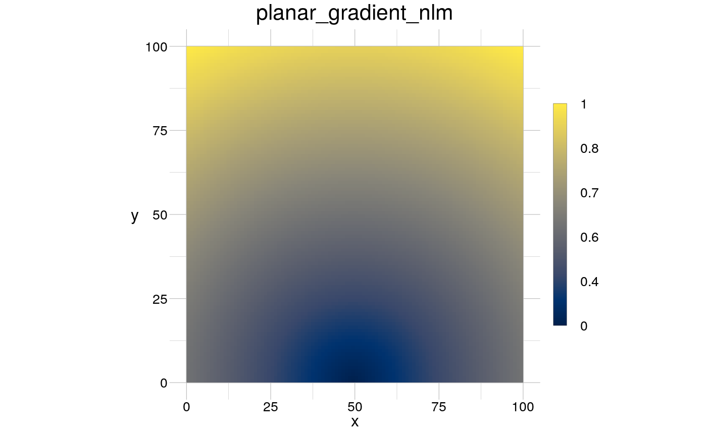

This is largely still work in progress.
spmGradient(mat, origin = NULL, type = "planar", ...)
| mat | [ |
|---|---|
| origin | [ |
| type | [ |
| ... | parameters to create the origin. |
A gradient can be understood in terms of the distance to an origin. With a
straight line as origin, one might end up with a edge gradient, or, in case
the line does not cross the the plot window, a planar gradient. Beware that
in case you provide an origin or a strict set of parameters (...), the
spatial pattern may not be neutral anymore!
In case origin is not given, nlmGradient constructs
internally a binary origin from what is specified in type and
params and then provides a distance matrix that has been scaled
between 0 and 1 as gradient. Each geometry requires at least the number of
vertices and their coordinates. In case the required arguments are not
specified in params = list(...), they will be set randomly.
# create a point gradient based on an origin mat <- matrix(nrow = 100, ncol = 100, data = 0) origin <- mat; origin[5000] <- 1 myPointGradient <- spmGradient(mat = mat, origin = origin) visualise(raster = myPointGradient)# create a geometry object #coords <- data.frame(x = c(0.4, 0.45, 0.7, 0.5), # y = c(0.4, 0.4, 0.6, 0.7), # id = 1) #window <- data.frame(x = c(0, 1), # y = c(0, 1)) #aGeom <- geomPolygon(anchor = coords, window = window, show = TRUE) # create gradient from the parameters of a geom #NLMPolyGrad <- spmGradient(mat = mat, type = "polygon") # create a gradient from a random point pattern #NLMPointGrad <- spmGradient(mat = mat, type = "point") # create a completely random gradient #RandGrad <- spmGradient(mat = mat, type = "random") #visualise(raster = raster::stack(NLMPolyGrad, NLMPointGrad, RandGrad))